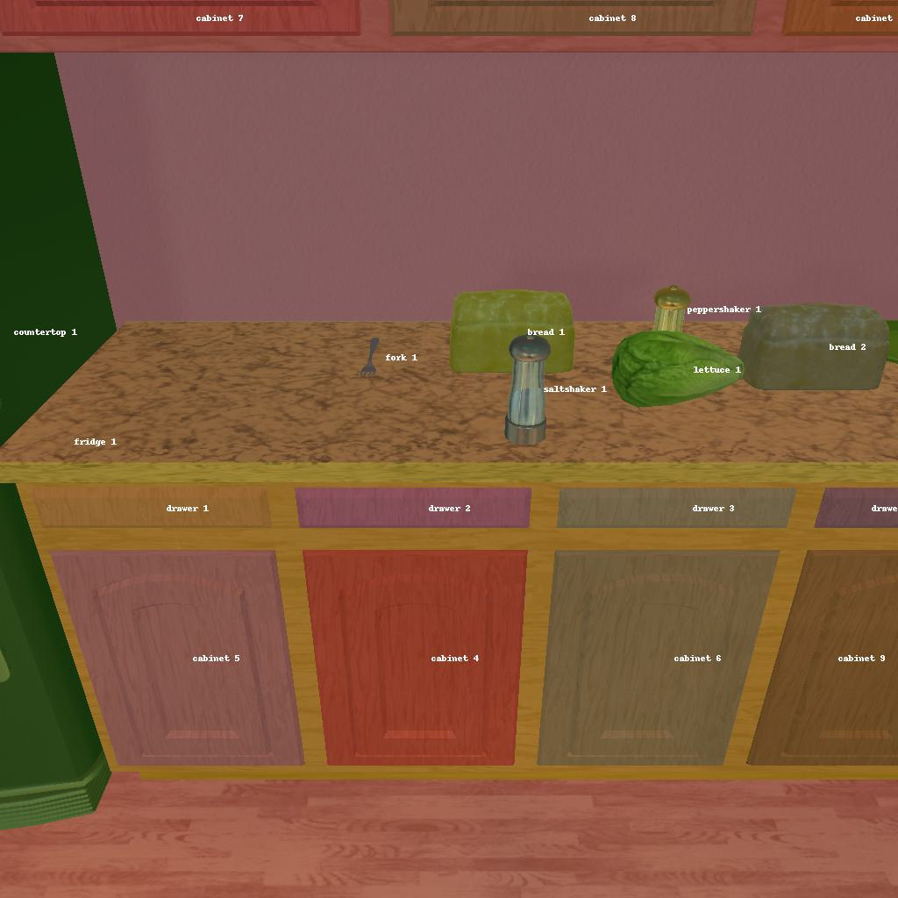

---------------------------------------------------------task: 15---------------------------------------------------------
--------------------------------------------------------------------------------------------------------------------------------------------------------------------
--------------------------------------------------------------------------------------------------------------------------------------------------------------------
Step:--------------------------------------------------------------------------8-------------------------------------------------------------------------------
----------------------------------------
VLM Prompt:
Image1:
Image2:
**Instruction**
1. Analyze the provided image to identify all visible household objects, focusing on those relevant to the task description "cool some mug and put it in coffeemachine."
2. Use the analysis of the image and the task hint "The agent must find an object of the desired type, pick it up, go to a fridge, cool the object with the fridge, then find the correct location to place it, and put it down there. The agent does not need to use the fridge button or open the fridge to cool the object, and the agent just needs to do action that is "cool the object with the fridge"." to answer the question: what is the most reasonable action in the choices for the task description "cool some mug and put it in coffeemachine"?
4. Decide and write the answer using the template: The answer is: (i): , where i is the real number. If there is no desired object in the image, search every place based on **Initial Observation** to find the object. And if no one is exactly correct, choose a similar answer.
**Initial Observation**
You are in the middle of a room. Looking quickly around you, you can see cabinet (1-15), fridge (1), countertop (1-4), drawer (1-4), microwave (1), toaster (1), coffeemachine (1), garbagecan (1), sink (1), stoveburner (1-3), sinkbasin (1)
**Answer Choices**
(1): go to cabinet 2
(2): go to cabinet 3
(3): go to fridge 1
(4): go to countertop 1
(5): go to cabinet 4
(6): go to cabinet 7
(7): go to drawer 1
(8): go to drawer 2
(9): go to cabinet 8
(10): go to drawer 3
(11): go to cabinet 9
(12): go to cabinet 10
(13): go to drawer 4
(14): go to microwave 1
(15): go to cabinet 11
(16): go to toaster 1
(17): go to cabinet 12
(18): go to cabinet 13
(19): go to cabinet 14
(20): go to cabinet 15
(21): go to countertop 2
(22): go to coffeemachine 1
(23): go to garbagecan 1
(24): go to countertop 3
(25): go to countertop 4
(26): go to sink 1
(27): go to stoveburner 1
(28): go to stoveburner 2
(29): go to stoveburner 3
(30): go to sinkbasin 1
(31): open cabinet 5
(32): close cabinet 5
(33): examine cabinet 5
**Answer**
Let's think step by step by following the instructions.
----------------------------------------
----------------------------------------
Original Response:
The task description is to "cool some mug and put it in coffeemachine." Based on the initial observation, there is no mug visible on the countertop 1. Therefore, the mug must be inside one of the cabinets, drawers, or perhaps the fridge. Since we need to cool the mug, it would be logical to assume that it may already be stored in the fridge to maintain its low temperature.
The task hint specifies that the agent does not need to use the fridge button or open the fridge to cool the object; they just need to cool the object with the fridge. This suggests that the agent might find the mug already cooled inside the fridge or will cool it by placing it near or in the fridge without interacting with it.
Given the answer choices, the most reasonable first action for the task would be to go to the fridge to either retrieve a cooled mug or to cool a mug that the agent may already have or find elsewhere.
The answer is: (3): go to fridge 1.
----------------------------------------
----------------------------------------
>>> Refine Original VLM Response and Get Pure Action: go to fridge 1
----------------------------------------
-----------------------------------------------------------------
Running time: 10.261716365814209 seconds
Total Money: 7.100669999999998
-----------------------------------------------------------------
-----------------------------------------------------------------
Text Observation:You arrive at loc 3. The fridge 1 is closed.
-----------------------------------------------------------------
UNSUCCEED